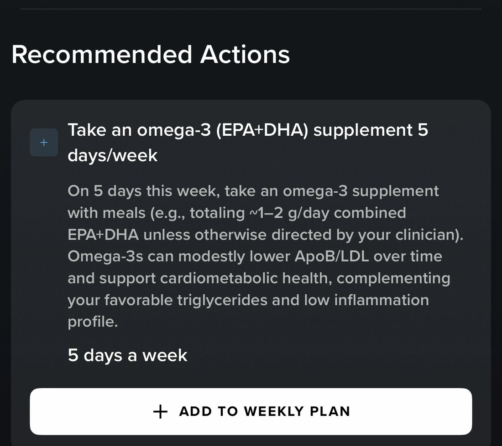
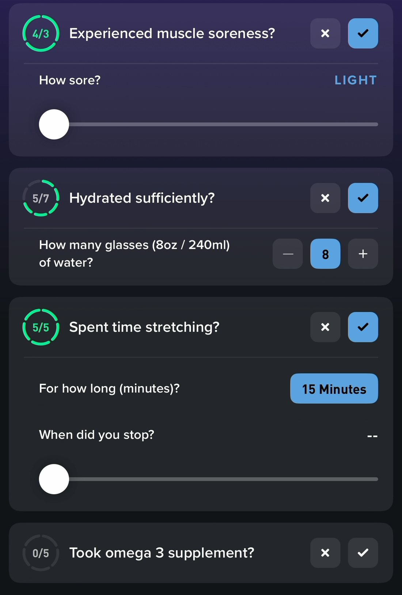
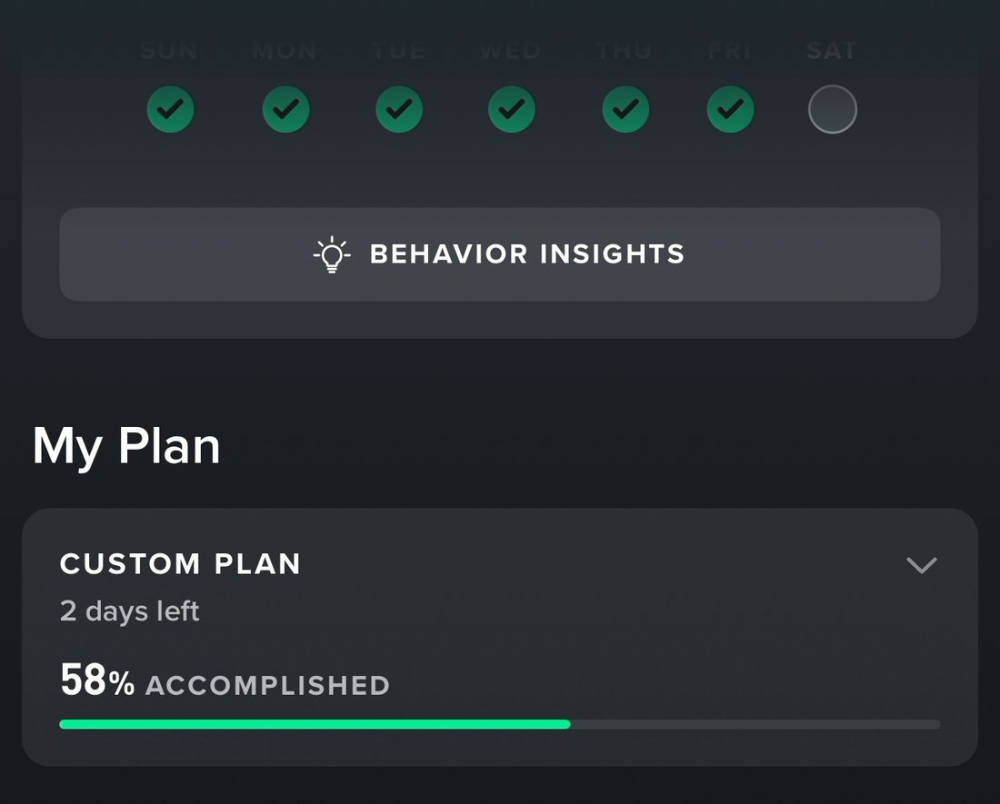
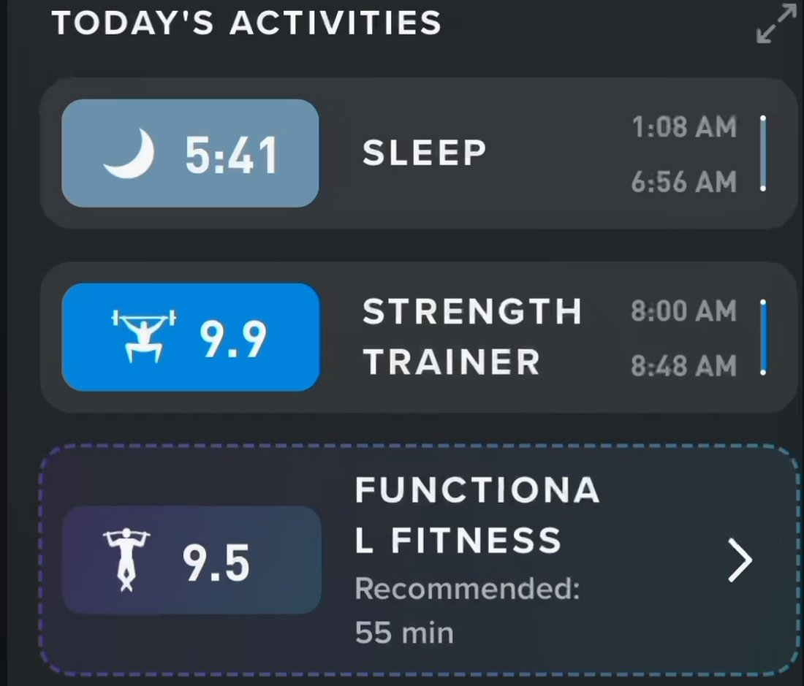
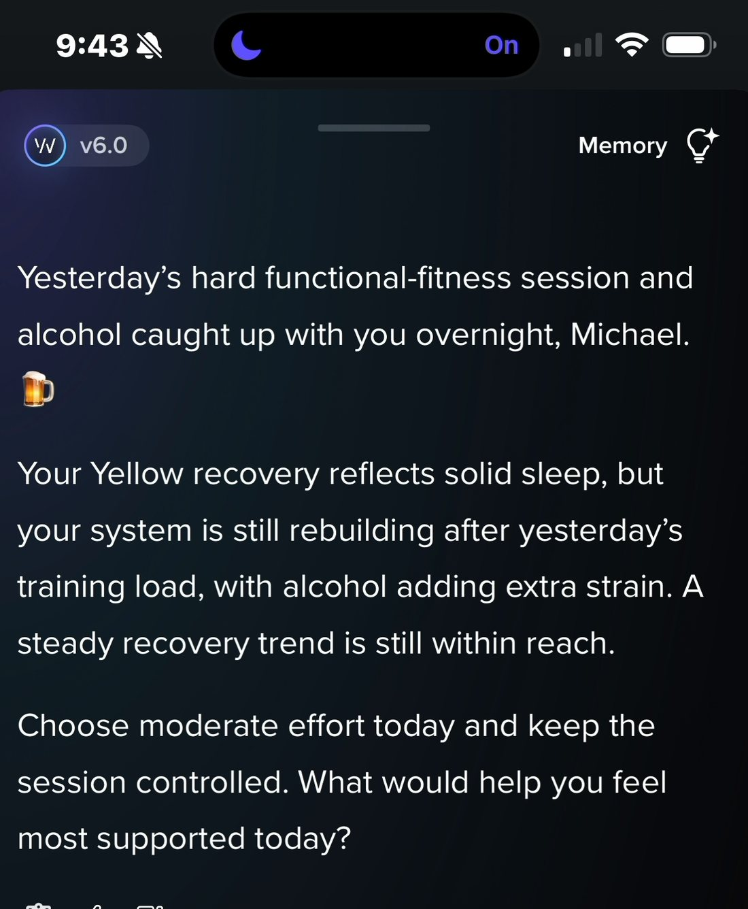
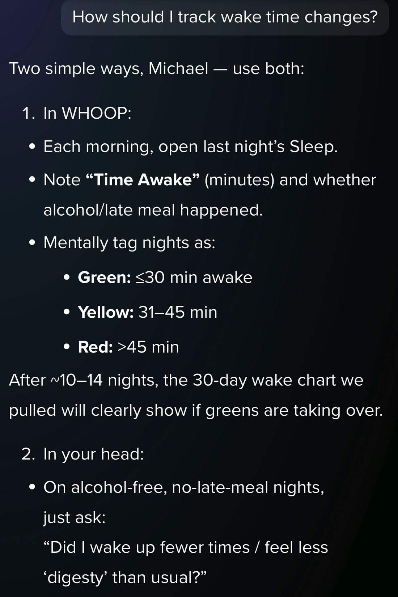

Product review · Thirty-six recorded sessions · Engagement, retention & pricing power
Falling Out and Back In Love With Whoop
Four rival bands now measure you for $99 to $199, with no subscription required. Whoop has already built the coach that should justify the difference — and scores me against a plan too vague to notice whether I followed it.
Mike Wong · MWG AdvisoryProduct TeardownSeptember 2026
01Premise
I started this to justify canceling
Ten days ago I was a Whoop member who checked a number every morning and had begun to wonder what I was still paying for. Four rival bands now measure me for $99 to $199, with no subscription required. I opened this teardown expecting to write the case for leaving.
Instead I found a coach that writes me full strength sessions with loads, runs them in a guided player, tells me when I came in under target, remembers a goal I mentioned once, folds my bloodwork into an estimate of my biological age, and turns a lab result into a weekly target it then checks me on every night. Most of it was one tap from where I'd been looking every day for years.
I'd call that half my fault and half Whoop's. Mine for never going looking. Whoop's for building the best thing in the category and leaving me to discover it by accident, in week three of a self-imposed research project.
That split is the most actionable finding here, because a discoverability problem is far cheaper to fix than a capability one — and it means the recommendations that follow are not "build a better product." They're close the joins in the product you already have, and make what I'm paying for impossible to miss.
The question underneath it
A member paying $199 to $359 a year, next to a $99 band with no fee — what am I paying for? Not measurement; that just got commoditized. Not the clinical layer alone; Whoop already sells Advanced Labs to people who don't own a strap.
The honest answer has to be the coaching. But a coach's output is a model plus a prompt plus a data feed, and the whole industry is racing down that curve together — Google shipped a competent one in May at a third of the price. So the premium cannot live in what the coach says. It has to live in what the product remembers me doing about it — and that is where I found the gap. Not a missing feature. A missing join — and Whoop has already built the same join, correctly, ten feet away.
02Method
Thirty-six recorded sessions, ten days
Screen recordings of my real use, 3–12 September 2026: morning checks, workouts, evening sessions, notification sweeps, a Weekly Plan audit, a blood draw and the Advanced Labs report that followed it. Every claim below is observed rather than inferred.
I have been a Whoop member since April 2019 and have logged 2,687 recoveries. Ten days of recording myself using it taught me more about the product than the seven years before them. There is far more here than a very good dashboard — it goes well past measuring and diagnosing into prescribing, guiding, checking and experimenting — and I found effectively all of it by trial and exploration, not by being shown.
What has already been said
None of the diagnosis in this piece is new, and it would be dishonest to present it as if it were. Patel, Asch and Volpp titled a 2015 JAMA paper “Wearable Devices as Facilitators, Not Drivers, of Health Behavior Change” — my thesis, eleven years ago. The IDEA randomized trial found worse than no benefit: 470 adults over two years, and the group that added a wearable to a behavioral program lost 7.7 pounds against 13 for counseling alone. An abandonment study the same year found roughly 80% of trackers put away within two months, one participant explaining, “It gave me a lot of information, but I don’t know what to do with any of this information.” And a month before I started, a framework in Frontiers in Digital Health proposed almost exactly the loop I use here, written for clinicians rather than product teams.
The commercial version is newer and just as prior. In April, Jason Stoffer wrote the sentence this whole document is a long footnote to: “Scores without solutions become less interesting over time. You stop checking.”
So: measurement failing to change behavior is a decade-old finding, and measurement failing to sustain a valuation is a months-old one. What I have not found anywhere is the mechanism — what specifically, inside a shipping product, stops a diagnosis from becoming a completed action. That is what the recordings are for, and it is the only part of this I would claim as mine.
One disagreement worth naming. Stoffer’s answer is vertical integration into intervention hardware — buy the mattress, the device that does something to your physiology. Mine is that the intervention is already inside the app, and the software does not remember it. His path costs acquisitions. Mine costs a foreign key.
The tape has corrected this document fifteen times, always in Whoop's favor. Earlier drafts claimed Whoop never writes a prescription, has no commitment objects, never pushes, never compares actual to target, never checks bedtimes, drops the plan at the START button, keeps bloodwork away from the plan, never verifies against a target, and doesn't run experiments. All false. Every one of those corrections is a capability I had been paying for and had never found — which is the finding, not a footnote to it.
One member, ten days. A sharp instrument for finding mechanisms, a blunt one for sizing them. Every claim here should be checked against Whoop's own instrumentation before anyone funds a quarter against it.
03Diagnosis
Three records of one intention
Whoop runs a real coaching loop — diagnosis, assignment, verification, progress. It pushes a score on waking, offers activities with a COMMIT button, writes full sessions with sets and loads, drives a guided player, and debriefs afterwards. Every stage is built and shipping.
But a single intended workout or activity can leave three unlinked records in the app, and nothing reconciles them with each other.
Observed 9 September. I committed to a session, was prescribed it, ran it inside Whoop's own guided player — and my commitment stayed open underneath the completed work like an unpaid invoice.
Every symptom in this teardown is downstream of that one gap. Three of them matter most, and they need spelling out for anyone who hasn’t used this product, or who still thinks of a wearable as a measuring device.
Verification grades the wrong number. The Weekly Plan is the one place I am actually shown running progress against something I committed to. But what fills those meters are broad categories — minutes in heart-rate zones 1–3, days hydrated, days with protein, X of Y days hit — some measured for me, some self-reported. None of it is graded against the specific targets the AI coach assigned me in chat. The plan measures the shape of my week. The coach prescribed the content of it. They are scoring different things.
Training can only be partially scored. Following from the above: in the course of a normal week I might fill a broad category meter I committed to. But if the coach assigned a strain target and an RPE for a specific session, staying accountable to those is entirely on me. Success or failure can only be debriefed inside a chat thread. That is arguably the most valuable act in the whole product — the moment a diagnosis turns into a specific instruction and I go and execute it — and it counts toward no visible progress anywhere.
And that exposes the missing end of the loop: progression, made visible and celebrated. Diagnosing, assigning, committing and verifying are all work, and work needs a payoff. Coming from games, I can’t imagine shipping an experience without one. Levels, streaks, leaderboards, trophies and career stats exist for exactly this reason, and they live in the most visible real estate in the product because their entire job is to tell the player: you’re winning, keep going. Whoop has the material for all of it and no surface that says it.
The join is real. It just points at the coarsest thing in the product.
On 11 September my Advanced Labs panel came back, and I watched the product do the exact thing I had just finished saying it couldn’t. Every clinical insight carries quantified Recommended Actions — omega-3 five days a week, 7.5 hours of sleep a night, 200 minutes a week in heart-rate zones 1–3 — and every one of them has a button underneath it: ADD TO WEEKLY PLAN, or, where the plan already holds that goal, UPDATE WEEKLY PLAN GOAL. I tapped them.

A clinical finding, a specific behavior with a dose and a frequency, and a button that writes it into the plan. This is the join working, on the one path where Whoop built it.
The next morning they were in my Journal, under a header I had never seen before — YOUR CUSTOM PLAN — each with a ring and a fraction against its weekly target. Hydrated sufficiently, 5/7. Spent time stretching, 5/5. Took omega 3 supplement, 0/5. On the home screen, above the fold: CUSTOM PLAN · 2 days left · 58% ACCOMPLISHED, and a week strip of green checks for the days I filled it in.
The verification

The progress

Left: the omega-3 item from the lab report, now a nightly question scored against its weekly target — 0/5, because I had only just added it. Right: the same answers rolled into a meter on the home screen. Four stages, joined, shipping. Some of these Whoop has to ask me about; others it measures without asking. Both kinds fill the same meter.
That is the entire loop. A diagnosis produced an assignment, the assignment became a plan item with a number on it, the plan item became a verification question, and the answers rolled into a progress meter. All four stages, wired end to end, shipping.
It is worth being precise about what closed here, because the mechanism is better than it first looks. Plan items get verified three different ways. Some Whoop has to ask me about — omega-3, fiber, stretching, glasses of water — and those close when I tap a checkbox. Some it measures as activity and never asks: Zone 2 cardio three days a week, 200 minutes in heart-rate zones 1–3. And some it measures as an outcome: 7.5 hours of sleep a night, 85% sleep regularity. All three fill the same meter. Diagnosis through verification is joined, across every kind of evidence the product can gather.
So the problem isn’t the mechanism, and it isn’t what the strap can or can’t see. It is resolution.
Everything the plan holds is a generalized outcome or a category total — a weekly bucket of minutes, a threshold, a count of days. What the coach actually prescribes is specific and dated: a strain target of 12.0 for this afternoon’s tennis, an RPE cap of 7 so my legs are fresh for Thursday, lights out at 10:20 tonight, Night 1 of a fourteen-night trial. None of that can become a plan row. So the meter can read 58% in a week where I ignored every specific instruction the coach gave me, and it reads the same whether I hit my strain target or missed it by four.
That same morning the coach offered me a Functional Fitness card with a COMMIT button on it, and I committed. It is not in the plan. It is not in the Journal. It is not counted in the 58%. And when I ran it, it did not close.
The join runs the length of the product. It just carries the vaguest version of what the coach already knows.
What the plan holds
What the coach prescribes
Form
Weekly buckets and thresholds — 200 min in zones 1–3, 85% sleep regularity, 5 of 7 days
One act, on one day — strain 12.0, RPE ≤7, lights out 10:20, Night 1 of 14
Verified by
Measurement where it can, a checkbox where it can’t. Either way, a meter moves.
A conversation. I have to remember it, do it, and come back and say so.
Accrues into
A percentage, a days-left countdown, a week strip
Nothing
The better version is already sitting in the product, one degree more specific. Take sleep consistency. The behavior is going to bed at roughly the same time; Whoop can verify it without asking me a single question; it already knows my thirty-day average; and its own Healthspan model says that behavior is worth 2.5 years. A plan item reading move sleep consistency from 81% to 86% this week — here is tonight’s bedtime, and here is what it’s worth would be a prescribed behavior, automatically verified, with the reason still attached. What I have instead is a threshold sitting in a list.
Which is why I keep landing in the same place. Nothing here is a missing capability, a missing surface or a missing model. Whoop has built the loop and the loop runs. What it hasn’t done is aim that loop at the sharpest thing it knows, or make the plan and the coach behave like one product.
Where each stage stands
Stage 1DiagnosisBest in class, and pushed
Recovery, strain, sleep, plus blood panels and Healthspan underneath. The only stage Whoop reliably starts without me.
Stage 2AssignmentStrong, and improving fast
Activity cards with COMMIT and alternatives; full sessions with sets, reps and loads; a guided player that runs them; lab findings that write targets straight into the plan. Weakness: the chat still can’t edit the plan, and the two assignment paths don’t know about each other.
Stage 3VerificationWorks, but grades the coarse version
Closed and working for anything in the Weekly Plan, whether measured or self-reported. But the plan holds weekly buckets, so nothing specific the coach assigned me is ever graded — and the honest verdict on those lives in the chat while the flattering one gets pushed.
Stage 4ProgressExcellent material, no route
A weekly plan meter that genuinely moves, plus Healthspan years, tonnage and milestones underneath. But the meter resets every Sunday, the rest is two or three taps deep, none of it is rendered as a journey, and there is nobody to show it to.
Fill levels are my judgment against thirty-six recorded sessions, not measured data.
04Field notes
Seven moments from the tape
1 · "The rest day from when?"
Two hours after a strength session, Whoop sent me an unprompted push notification — a properly-shaped verification check-in: "You took that full rest day for a reason, and I wanted to check whether it actually helped the soreness settle down. How do your legs feel — better, the same, or worse?" I typed back: "The rest day from when?"
It had anchored on an event it inferred from an absence of activity — while a commitment I had tapped that same morning sat one table away. Inferred referents are contestable; declared ones aren't. A check-in that gets disputed spends trust in the one surface meant to hold you to things.
2 · Two voices, one session
The coach offered me a tennis session that morning with a target attached, and I tapped COMMIT: strain 12.0, 50 minutes, heart-rate zones 1–3. I delivered 8.4 over 57 minutes, 70% of it in Zone 1 — under-intensity and over-time.
What Whoop pushed: "Great session — your longest tennis bout this week." What the chat told me, hours later, when I went and opened it: "tennis was lighter than your strain target at 8.4 (target: 14.0). What felt different about the tennis today?"
Everything that arrives unbidden is praise. The truth is available on request.
Both are true statements about the same workout. The product picks the flattering one to deliver — and neither mentions the number I actually agreed to.
3 · A plan set to your own average
Weekly Plan is Whoop's goal system — you pick a plan, it sets two or three weekly targets and puts a progress bar on the home screen. Mine is a template I chose once when the feature launched and never revisited: Feel Better — hydration, steps, any recovery activity — running at 8% with six days left. The custom builder proposes a daily step target of 12,600 against a 30-day average of 12,600, annotated "your thirty-day average is already optimal."
A plan whose targets equal my existing behavior cannot produce progress by construction. And on the morning I audited it, the coach was calling it "a true 'go' day" and writing me a twenty-set lower-body session. Two systems advising the same week of my life, disagreeing — and the one on my home screen is the one nobody tuned.
I have since replaced the template with a custom plan seeded from my lab results, and it behaves completely differently: real targets, a meter that moves, 58% accomplished with two days left. Which makes the template the sharper indictment, not a lesser one. The good version of this feature was three taps away for a year, and nothing in the product ever suggested I go find it.
4 · The best coaching of the week, in scrollback
Traveling, I asked the coach how long I should take it easy. It produced a conditional multi-day protocol: "Today and tomorrow keep day strain under 8–9. Day 3: if you're yellow ≥60% or green, resume moderate training at 11–13. If you wake red, one more low-strain day." I chose the cautious branch and said "sounds good, I'll keep strain low."
It produced no object at all — no card, no COMMIT, nothing waiting on Day 3 to ask what color I woke up. Meanwhile the suggestions I could have scrolled past all got cards. Whoop captures what it proposes and discards what I decide.
5 · Two rows for one workout
Referenced above, and worth seeing in full because it is the most blatant instance of the broken join in the coaching loop.
I committed to functional fitness, was prescribed a session, and ran it inside Whoop's own guided player — set-by-set, rest timers, Clean and Split Jerk, set 2/5, 3 reps, 95 lbs — finishing at 25 sets and 11,795 lbs of tonnage. Today's Activities then showed this:

The middle row is the workout that happened — 48 minutes, 25 sets, 11,795 lbs, logged by Whoop's own guided player. The dashed row underneath is the commitment that produced it, still open, still saying Recommended: 55 min, an hour after I finished.
I did exactly what I said I would, inside Whoop's own product, and the promise never closed.
6 · “What would help you feel most supported today?”
9:43am on 12 September. I had already committed to a Functional Fitness session in the Daily Outlook, already done it, and already logged 55 minutes at 13.0 strain. The coach opened with this:
“Yesterday’s hard functional-fitness session and alcohol caught up with you overnight, Michael. Choose moderate effort today and keep the session controlled. What would help you feel most supported today?”

9:43am. The session it is steering me away from was finished at 8:48.
It is coaching me toward a workout I had finished ninety minutes earlier. So I told it: “I’ve already worked out today per the daily outlook functional fitness commitment.” It answered instantly:
“Got it, Michael — nice job following through on the Daily Outlook plan. Given you already hit that functional fitness commitment: keep the rest of today in the low-to-moderate strain range…” and a few messages later, unprompted, “with that 55-minute functional fitness session (strain 13.0, day strain 13.2 on a 49% Yellow)…”
It had the session the whole time. Duration, strain, day strain, recovery color. What it did not have was any link between the commitment it issued me at 7:41 and the activity that satisfied it, so its opening move was written as though the day hadn’t started. This reads like a memory failure and isn’t one. The memory is excellent. The join is missing, so there was nothing to remember.
7 · “Mentally tag nights as…”
That afternoon the coach did something I had spent three drafts recommending it should do. Off a conversation about night wake-ups, it pulled a 30-day chart of wake events and time awake, rendered it in the thread, and then designed an experiment:
“For the next 2 weeks, pick 4–5 nights/week that are alcohol-free and no food in the last 3 hours before bed. On those nights, aim to keep wake time ≤30 min total as the success metric.”
Duration, dose, arms, a declared success metric, and a chip that reads Yes, let’s run the experiment. I tapped it. It confirmed tonight as Night 1. Then I asked the obvious question — how should I track this? — and got the answer that defines the whole problem:

Every number in these instructions is one Whoop already holds. The verb it chose is mentally tag.
Its protocol
What Whoop already has
“Each morning, open last night’s Sleep. Note Time Awake (minutes) and whether alcohol/late meal happened.”
Time awake is measured automatically. Alcohol and late meal are two of the questions the Journal already asks me every morning.
“Mentally tag nights as: Green ≤30 min awake. Yellow 31–45. Red >45.”
A threshold comparison against a number the strap produced while I slept.
“In your head: on alcohol-free, no-late-meal nights, just ask: did I wake up fewer times than usual?”
Thirty days of wake events, which it had just charted for me, in the same thread.
Every variable in this experiment is already instrumented. The intervention is a journal question Whoop asks nightly. The outcome is a metric the strap measures. The baseline is a chart it drew thirty seconds earlier. And the protocol it handed me is read it yourself each morning and keep score in your head.
Then it offered: “If you want, I can check your 7- and 14-day wake trends mid-experiment and tell you exactly how much your average wake time has moved.” I said yes. That promise now exists only as a sentence in a chat thread, with nothing scheduled behind it.
The most sophisticated feature I found in ten days ships as a message, and asks me to be its database.
This belongs in the Health tab, or in the Weekly Plan, as an object: two arms, a countdown, nightly assignment, automatic scoring, a result page. Whoop is one screen away from being the only consumer product that can run a controlled trial on a member’s own physiology — and it is currently asking that member to remember.
05The routine
What I’d tell a new member to do
Ten days in, I can write the routine that actually unlocks this product. It is five minutes a day and it turns a dashboard into a coach. None of it is in the onboarding, none of it is prompted, and I found every step by accident.
Setup — once, and again whenever your inputs change
Go to Health, open the coach, and build your Weekly Plan in conversation rather than picking a template. The template is the worst version of this feature and it is the default.
Interrogate every target it proposes. Ask whether the number is your own average, and whether that average is skewed by a stretch that wasn’t normal — travel, injury, a bad month. A goal set to your own mean cannot produce progress by construction; mine proposed 12,600 steps against a 30-day average of 12,600.
Redo this when an Advanced Labs panel lands or you upload outside records. Every clinical finding has an Add to Weekly Plan button under it, and those two taps are the highest-value thing I did all week: it is the only path in the product where a target arrives with evidence behind it rather than arithmetic.
Daily
Wake, and fill the journal. Custom-plan items are scored here and nowhere else. You can also just tell the coach in chat — it writes the entries for you and confirms them.
Open the Daily Outlook and commit. Talk through the day, then tap COMMIT on what you’ll actually do. This is your daily plan, and it is the one moment in the product where you state an intention.
Do the work, tracked. Use live tracking wherever you can. Ask the coach to write a session it can run in the guided player, or hand it a photo or screenshot of a workout and have it log the thing.
Debrief afterwards. Tell it what happened. Tell it you did the thing you committed to — it will not work this out on its own. Then take the recovery commitments that follow.
Check in late afternoon or early evening, once it has the day’s strain and stress. Take the wind-down recommendation and commit to a bedtime you’ll actually keep.
Weekly: on Sunday, look at the plan meter and at Healthspan. They are the only two surfaces in the product where anything accumulates, and neither one comes to find you.
The routine works. It is also a routine the member has to hold in their head, because three of its five steps leave nothing the product can act on tomorrow.
What’s wrong with my own guide
Writing it down is what convinced me the joins are the whole story, because every weak step in the routine is a step where the product doesn’t keep anything.
Step 4 exists because the product won’t do it. “Tell it you did the thing you committed to” is a workaround for a missing foreign key, and I only learned to do it after watching the coach offer me a workout I’d already finished.
Steps 4 and 5 evaporate. The best coaching I got all week — multi-day protocols, a two-week trial, a wind-down plan — exists as prose in a thread. Nothing is scheduled behind it and nothing asks about it tomorrow.
Follow this perfectly for a month and there is no page that shows you did. The plan meter resets on Sunday. That’s the whole record.
Nothing in the product ever tells you to do any of this. Which is the part that should bother Whoop most: this routine is the product working as intended, and it took me seven years and a research project to assemble it.
A routine that lives in a chat log is one the member has to remember. A routine made of objects is one the product can run.
Every recommendation in section 09 is, in the end, a proposal to turn one step of this guide into something the product holds instead of something I do.
06Field
Nobody in the wearable lane has closed the loop
Every serious competitor now ships an AI coach, so the differentiator isn't whether one exists — it's how much of the loop it holds. I went looking for hands-on accounts and product documentation for the two that matter most.
Capability
Whoop
Oura Advisor
Google Health Coach
Intake of goals
None — infers, or learns if I mention it
Conversational, no formal intake
Onboarding interview: goals, challenges, where you are
Writes a session
Exercises, sets, reps, loads
No — suggests "things to try"
Custom routines by time and equipment
Guided execution
Strength Trainer: set-by-set, rest timers
None
Workouts in-app
A plan the conversation edits
Partly — labs write into it; the chat still can't
No plan object
Yes: "I'm traveling this week, adjust my plan"
Proactive contact
Wake, post-session, evening
Optional daily check-in
Morning readiness, post-workout, evening recap
Conversational memory
Strong — goals, sessions, preferences
Strong — followed up weeks later on a suggestion
Transcripts retained from onboarding
Data window available to the coach
Full history + bloodwork
Past 7 days of metrics
Fitbit history
Structured feedback loop
Closed for journal items; open for anything measured
Conversational only
Workout ratings feed future plans
Compiled from vendor documentation and hands-on reviews, September 2026. Google's coach was still labeled a preview at launch and shipped Android-first.
What that comparison actually says
Oura's coach has the best memory and the shallowest data. One reviewer documented Advisor asking, weeks later, whether the new pillows they'd discussed had helped — better follow-through than anything I saw from Whoop. But it can only see the past seven days of metrics, which structurally rules out the long-arc attribution Whoop does with Healthspan, and it creates nothing a member commits to. Oura's own documentation describes goal-setting as "brainstorming strategies." It is a very good conversation partner attached to a week of data.
Google's coach has the weakest sensing and the best architecture. It opens with an actual intake interview — goals, challenges, where you are in your health journey. It generates a plan that lives on its own tab with weekly targets. It pushes morning readiness, post-workout breakdowns and evening recaps. Workout ratings feed back into future recommendations. And the documented flow for schedule disruption is a sentence I could have written from my own notes: "I'm traveling this week, can we adjust my plan accordingly?"
I asked Whoop that exact question and got excellent advice that vanished into a chat log. Google's answer to the same sentence is a plan that changes.
That is the whole argument in one comparison. Whoop knows more about me than either of them — full history, continuous physiology, bloodwork, a clinical layer neither can match — and holds less of it in a form that does anything. The competitor with a third of the data has more of the loop, for $99 a year.
The pricing pressure is now structural
Screenless band
Hardware
Subscription
Amazfit Helio Strap
$99.99
None
Google Fitbit Air
$99.99
Optional — $99.99/yr coach
Garmin CIRQA
$199.99
None required — Connect+ optional, $69.99/yr
Polar Loop
$199.99
None
Whoop 5.0 / MG
Included
Required — $199–359/yr
Whoop invented this form factor and is now the only occupant charging rent for the sensor. Reviewers in the running world reached the same split independently: "summarizing what happened is not the same as coaching what happens next."
Garmin is the one to watch, because it isn’t coming for the mass market. It has spent two decades as the serious athlete’s brand — which is Whoop’s audience — and in July it shipped into Whoop’s exact form factor, with “no subscription required” as the headline. In the r/whoop thread I quote in section 08, three members say they have already left for it. Whoop still has real advantages: DC Rainmaker’s month-long review found Whoop detected a three-hour ride “perfectly, to the minute” where the Cirqa split it into three, and that Whoop reliably got 14 days of battery against the Cirqa’s five to seven. But those are sensor and firmware wins, and they narrow with every Garmin release.
The more interesting move is what Garmin is doing with its subscription. Because the Cirqa has no screen, the phone is the product, and reviewers have called it the first Garmin device designed around Connect+ rather than sold with it as an extra. Whoop started subscription-first and bolted on hardware; Garmin started hardware-first and is backing into a subscription. Both arrive at the same question from opposite ends: what is the recurring fee actually for? Garmin’s current answer is a workout library and some structured plans. Whoop’s could be a coach that remembers what I promised — but only if the loop closes.
07Market
Oura just priced the category
Oura filed to go public on 8 September 2026, seeking $3B at a $16B valuation. Whoop will almost certainly follow. Scott Galloway's read of the S-1 puts a number on exactly the problem this review describes.
Oura
Whoop
Revenue
$1.4B, +74% YoY
$1.1B annualized bookings
Paid members
5.0M, doubled YoY
2.5M
Subscription price
$5.99/mo · $69.99/yr
$199–359/yr
Revenue from hardware
77%
0% — the subscription is the whole business
Subscription gross margin
89%
n/a
12-month retention
87% — "on par with Netflix and Spotify"
Never disclosed
Oura figures via Galloway's reading of the S-1, 11 September 2026. Whoop figures as previously published.
The number that should worry — and motivate — Whoop
Galloway does the arithmetic nobody else did. Oura is asking for an 11× revenue multiple on a business that earns 77% of its revenue from rings. Value the hardware at a hardware multiple — 2× revenue, roughly $2B — and the market is being asked to price Oura's subscription business at $14B, or about 43× revenue. Justifying that requires Oura to keep doubling subscribers toward roughly 25 million.
Then he names the ghost: Peloton. Hardware plus subscription, a software multiple, $46B at the peak — and then subscriber growth flatlined and the market cap fell to a third of its IPO value. What flatlined was engagement.
The public market is about to declare that in wearables, the subscription is where the value is. Whoop is the only major player whose revenue is entirely that.
This cuts both ways for Whoop, sharply. If investors accept that framing, Whoop is the purest expression of it in the category. But it will then be judged on the same two numbers Oura is: subscriber growth, and 12-month retention — where Oura has published 87% and Whoop has published nothing. Every recommendation in this document is, ultimately, an argument about that second number.
Share of Health Interface
Galloway's frame for why this market matters is SoHI — share of health interface. Oura's moat is 42 billion hours of longitudinal first-party data and a median subscriber who wears the ring 23 hours a day; CEO Tom Hale calls it "a health intelligence platform," not a wearable. The bet is that whoever owns the continuous interface to your body owns a slice of a $7T market.
Whoop's structural answer is strong and under-argued. Oura can afford for its app to be a nice-to-have because 77% of the money arrived when you bought the ring. Whoop cannot. Every dollar depends on someone deciding, again, that the service was worth it this year — a brutal model and an excellent forcing function. Whoop is also further along the regulated axis: it already ships ECG, AFib detection and blood-pressure insights, while Oura operates entirely under the FDA's wellness exemption and is running a 350,000-person study toward its first regulated feature.
Awareness is a category. Service is a different one.
Galloway, who has trained four times a week for forty years, is himself skeptical: "nobody says they wish they'd done a better job optimizing their VO2 Max… I'm wary of reducing daily activities to numbers on a dashboard." He is right about the thing he is describing, and it is the exact ceiling I hit.
Almost everyone — buyers, reviewers, and most of these products — treats a wearable as a way to become more aware. Awareness is a one-time purchase dressed as a subscription: once you know your HRV runs in the low 40s and that alcohol wrecks your sleep, you have received the product. That is why I was close to canceling, and it is the mechanism behind every flat subscriber chart in this category.
People are buying awareness. They should be buying a service that improves their health — and only one of those is worth paying for twice.
A service gets bought repeatedly because it keeps doing something for you: prescribing, checking, adjusting, remembering. Whoop has more of that already built than anyone in the category — and presents itself, on the screen I open every morning, as an awareness product.
08Why it matters
Checking is a habit that ends. Engaging is one that renews.
My loop before this exercise was: wake, read a number, close the app. Forty-five seconds, once a day, for years. It is a good habit and it has a terminal property — it gets more predictable the longer it runs, and a member who can guess the number before opening the app has stopped buying anything.
That is the churn mechanism, and it doesn't announce itself. Nobody cancels because the sensor got worse. They cancel because they finally answered "have I already got what I came for?" — and a product that gives the same answer the same way every morning is training them toward yes.
Members are saying the same thing
On 20 September a longtime member on r/whoop asked what people want from the next Whoop, and admitted “I’m starting to feel like I’m getting less value out of the device, especially considering the price doesn’t always feel justified.” About ninety comments followed. Hardware and sensor accuracy come up, and those are outside the scope of this piece. But the dominant thread is the one I started with: the price, measured against what the product does with what it already knows.
“After 4.5 years with Whoop, I already know too well all my trends and metrics, so there is very little added value after the first year or so.”
Awareness runs out
“The data to say which is already on the wrist, they just show the score and skip the reason.”
A number, no reason
“I take it and it’s kinda fun. There’s nothing to do with the information.”
Nothing to act on
“If you interact with it, it interacts more with you. I never touch it and it never tells me anything.”
The coach waits
“…proactively prompting me with very personalized ideas rather than generic nonsense.”
What they want
“…connecting fitness, nutrition, and health insights to personal goals, then helping people build a plan to achieve them.”
The loop, described
Two signals in that thread matter more than any single comment. Three members say what keeps them subscribed is a credit-card benefit — the value is being supplied by Chase, not by Whoop. And at least one has stopped paying altogether and runs the strap on a free third-party app, with another planning to once their term ends. They kept the sensor and dropped the service. That is the market telling Whoop, about as plainly as it can, which half of the product it doesn’t believe it’s paying for.
One thread, self-selected, roughly ninety comments — directional, not representative. There are defenders too: one member argues that about $16 a month is cheap for a device that warned them they were chronically stressed before it became a problem. Which is the same argument from the other side. The subscription felt worth it at the moment it told them something they could act on.
The evidence sits in this study
My own engagement rose sharply the moment I started recording myself. More time in the app, and far more intentionality in it — commitments taken deliberately, plans negotiated rather than scrolled past. The gap between my ordinary use and my observed use is the gap between checking and engaging, and the only thing that produced it was having a reason to be deliberate. Whoop supplies no such reason. An incentive system is the scalable version of what a camera did to me for one week.
There is decent evidence this is what people are actually buying. A 2025 randomized trial in the Journal of Strength and Conditioning Research put 79 trained adults through ten weeks of identical programming and varied only the support around it. The share clearing an 85% adherence bar: 88% supervised in person, 81% with an app, 52% self-guided. Software captured nearly the whole gap. The structure is the product — not the presence of a human, and not the numbers on the dashboard.
The objection this answers
There is a real backlash building against exactly the thing I'm asking Whoop to do more of. Kara Swisher on the longevity-tracking boom: "It's meaningless numbers without an actual instruction. It's just a lot of data, and I think they're confusing data with actual information." Galloway calls the broader pattern metrics-maxxing, and borrows C. Thi Nguyen's idea of value capture — people optimize BMI instead of health, GPA instead of learning, because the number is what they're shown.
Both critiques are aimed squarely at the dashboard, and both are correct about it. Neither is aimed at a service that prescribes, checks and adjusts. A dashboard invites value capture; an instruction points past the metric at the behavior. Closing the join isn't more optimization — done right it's less metric-staring, because the member stops reading a score and starts executing something.
Swisher's specific example lands on a flaw I found: she notes 10,000 steps is a marketing number and the evidence better supports something nearer 7,500. Whoop's Feel Better plan set me a 17,500-step goal; its custom builder proposed 12,600, which is exactly my current average. Neither is grounded in what's good for this body. The one place Whoop holds an evidence-backed answer to "what should my target be" is the Healthspan attribution — and the plan ignores it.
What the premium has to be made of
Two assets don't commoditize, and Whoop already owns both.
Healthspan is the first, and I undervalued it for most of this exercise. It is Whoop's estimate of my biological age, updated weekly, built from my behavior and — since my blood draw — my bloodwork. Mine reads WHOOP Age 30.1: 10.7 years younger than my calendar age, aging at 0.8× the normal rate.
Underneath sits the part that matters — an attribution of years to specific behaviors: sleep consistency worth −2.5 years, strength time −1.6, time in heart-rate zones 1–3 −1.2, zones 4–5 +0.1, with blood biomarkers folding into the same model. Behavior plus continuous physiology plus bloodwork, resolved into one legible number with a breakdown. A $99 band cannot assemble this, because the moat isn't the model — it's three data streams meeting in one member's record over years.
On 10 September my lab results landed and Whoop put "Latest Labs in Healthspan — learn how your latest labs are impacting your sleep, Strain and fitness" on the home screen. That is the vertical integration finally showing itself in the one place I actually look. It is also the exception that proves the rule about everything else being two taps deep.
A settled record of showing up is the second. Three years of kept commitments, completed trials, verified bedtimes and closed plans is not a feature; it's a switching cost that grows every month you hold it, and the only asset here that a competitor cannot buy, copy or ship.
A bridge between them opened while I was writing this, and it is one bolt wide. When my labs landed, Whoop offered to write clinically derived targets straight into my plan — 7.5 hours of sleep, 200 minutes a week in zones 1–3 — and I took them. That is the right mechanism firing, and it is the most important thing the product did in ten days. But it fires only when a blood panel arrives, it is a toggle rather than a negotiation, and it arrives with the reason stripped off. The plan item reads 7:30 hours. It does not read this is the single behavior worth 2.5 years of your biological age, and it has slipped five points since June.
Whoop computes exactly which behaviors buy years. Then it writes the number into the plan and throws the years away.
Making it a no-brainer
The renewal question is answered by what I can see I got. Today the honest answer is "a lot of accurate numbers." It should be a page I can point at:
This year: 3 trials completed, 81% of commitments kept, bedtime held 4 nights in 5, sleep consistency up 6 points — worth 0.4 years of Healthspan.
Every figure in that sentence is already computed or one join away, and none of it is visible to me anywhere today. That page is the subscription's argument for itself, and it is the cheapest thing on this list to build.
09Recommendations
Five moves the evidence supports, and five that follow
The first five come straight out of the recordings: each one closes a gap I watched happen, using capabilities Whoop has already shipped. The second five are hypotheses — things I believe from years of running live games, but that nothing in ten days of tape proves. They only become worth testing once the first five exist, because each of them needs something to count.
Ship first01 Close the join One object, three states. Everything below depends on it.
Then02 Verify the commitment Grade the member's number, in the push.
Then03 Plan from Healthspan Targets with the reason still attached.
Close the loop — supported by the recordings
01
One object, three states
AssignmentVerification
Bind the commitment, the prescription and the logged activity into a single record that moves intended → prescribed → completed. Finishing a session in the guided player closes the commitment that produced it. And a decision I make in conversation becomes an object too — “sounds good, I’ll keep strain low through Day 3” should leave something behind that asks me on Day 3, not just a line in a thread.
Why it matters: this is the enabler. Accountability, plan scoring, streaks, the economy and the renewal page all become available on infrastructure that already exists. It is the difference between a product that watches me and one that remembers what I promised.
The existence proof is already shipping. A lab finding becomes a plan item becomes a nightly question becomes a percentage — all four stages, joined, today. Whoop built that pipeline, and it already runs on measured behavior as well as self-reported. The ask here is to run it at the resolution the coach works at — this session, this target, tonight’s bedtime — rather than only at the level of weekly buckets.
The open question is where the break actually lives, and from outside the app I can't tell. It may be a data-model gap — three tables, no key. It may be journey design — the prescribed workout and the committed activity are reached by two different paths that were probably built by two different teams. Or it may be how the coach's memory is scoped: it clearly retains goals and past sessions, yet it reasons about my commitments as conversation rather than as state it can query and update. My guess is all three, which is why I'd start this as a discovery spike rather than a build ticket.
MetricCommitment resolution rate — share reaching a closed state rather than sitting open
EffortUnknown until scoped — likely small if it's a data model fix, larger if the journey has to be rebuilt
RiskLow. Needs a "renegotiated" state so life events don't read as failures.
02
Verify the commitment you already took
Verification
Point the comparison sentence Whoop already writes at my number instead of its own, and put it in the push rather than the chat: "You committed to 12.0 and 50 minutes; you came in at 8.4 over 57. Easy day on purpose?" Start with bedtime — nightly, binary, declared, and measured while I sleep.
Why it matters: this is what a paid coach actually sells. It costs almost nothing — the logic is written and running, it just reads the wrong field — and it converts warm commentary into the one thing members can't get from a $99 band: somebody who noticed.
MetricAdherence on reconciled commitments vs. unreconciled; referent disputes
EffortSmall, once 01 exists
RiskNaming a shortfall badly reads as scolding. Ask, don't assert; allow "deliberate" and "life happened" as first-class answers.
03
Derive the plan from Healthspan
AssignmentProgress
Run the labs bridge continuously, and carry the reason through it. The plumbing exists: a finding proposes a target and writes it into the plan. Today it fires once per blood draw and arrives as a bare number. Let the coach fire it every week off the Healthspan decomposition, and let the plan item keep its attribution: "This week is sleep consistency — worth 2.5 years, down from 86% to 81%. Here's the bedtime that follows and what it should reach by Sunday."
Why it matters: it connects the two assets that make Whoop uncopyable, and it turns the vaguest question in the product — "what should I be working on?" — into a prescription backed by years of biological age. Nobody else can write that sentence. It is also the cheapest place to make the subscription visible: a target with a reason attached is a service, and a target without one is a number, which is the thing that just got commoditized.
MetricPlan–Healthspan alignment; plan completion rate
EffortSmall to medium — the write path from a clinical finding into a plan goal already exists; this changes what triggers it and what it carries
RiskNever set a target equal to a member's current average and call it a goal.
04
A progression you can see
Progress
One surface built from things that only go up — tonnage, trials completed, commitments kept, VO₂max, Whoop Age — rendered as a route with cleared ground behind and a visible next node, not a percentage that resets on Sunday.
Why it matters: Whoop's headline scores are homeostatic by construction; get fitter and Recovery recalibrates. The accumulating material exists and is two or three taps deep. Memory answers "how did I do." A map answers "what's next" — and that is the question that survives a Tuesday when the score is a 64 and nothing is notable.
MetricMembers who can answer "how far along am I?" unaided; weekly return to the surface
EffortMedium — mostly surfacing and sequencing
RiskNever build a streak on biology. A run of green days is weather; kept commitments are yours.
05
Trials — A/B your own body
DiagnosisAssignment
Give the trial the coach already designs an object to live in. It proposed me a two-week alcohol-and-late-meal experiment with a declared success metric, then asked me to keep score in my head. Put it in the Health tab instead: alternating blocks on one variable — week A normal, week B the intervention, then A, then B — with nightly assignment, automatic scoring against the measured outcome, a countdown, and a result page at the end.
Why it matters: nothing to fail — an A week is half the experiment, not a lapse — so it survives contact with a bad week. It converts "understand your body" from a noun into a verb, and 2.5M members running controlled one-variable experiments against continuous physiology is a publishable dataset no competitor can assemble. The hard part is done: the coach writes a competent protocol unprompted. The gap is that the intervention is a journal question Whoop already asks, the outcome is a metric the strap already measures, and the product still asks the member to be the database.
MetricTrial completion; D90 among participants vs. matched controls
EffortMedium — the protocol writer, the Journal, the behaviors and the stats engine all exist; what is missing is the object and the screen
RiskState the detectable effect size up front, and return "your noise is larger than this effect" as a real result.
Second order — once the loop exists
Hypotheses rather than findings. Each one is a way to reward, share or vary the loop above; none of them works on a product that can’t yet tell whether I kept a promise.
06
The Morning Call
DiagnosisAssignment
In the beat before the recovery score resolves, ask me to call it — red, yellow or green. Reveal, score the call, then hand me straight into the day's commit carousel.
Why it matters: it converts the single session nearly every member already takes from a read into an act, with no new habit required and no stake placed on sleep. Calibration accuracy is the rarest thing available here — monotonic, entirely earned, impossible to fake, and at scale a measure of interoception across millions of nights that nobody else can assemble.
MetricCall rate; 30-day calibration; commit-rate after a call vs. without
EffortSmall — one screen in a wait state that already exists
RiskLock the score before the prompt; suppress on any health flag; permanently dismissible; rotate it rather than gating the score forever.
07
An economy worth engaging for
Progress
A currency earned for behavior, never physiology — kept commitments, completed trials, calls made, journal consistency — redeemable against a ladder topped by an Advanced Labs panel ($299–599 retail, high margin, deepens the moat), with membership credit, bands, early access and donations beneath it.
Why it matters: Whoop is structurally an annual-fee business with no statement of value. Amex justifies $895 by itemizing $1,500 of credits — and is currently running that play on Whoop's behalf with wellness credits. An economy is also what makes the unglamorous three-quarters of the loop worth doing, and without a currency a live-ops calendar has nothing to pay out.
MetricEarn/burn ratio; engagement with non-dashboard surfaces; renewal by tenure
EffortMedium — badges, levels, streaks and career stats already shipped in April
RiskNever pay for strain volume — the All-In 250 Challenge rewarded 250 minutes of activity, contradicting the product's own thesis. Never pay for disclosure.
08
Own the whole wellness loop, not one integration
DiagnosisVerification
Whoop went deep with Strava in May. Sleep, training and recovery are three legs of the loop — nutrition, weight and hydration are the rest of it, and they are where members are already improvising. Ship first-class two-way integrations with MyFitnessPal, Cronometer and the rest, and treat Apple Health as an inbound pipe rather than a checkbox.
Why it matters: on 10 September I found myself typing "I've got some Normatec boots too that I'll probably use" into the chat — telling my coach what equipment I own, in free text, after it had already made its recommendation. Google Health asks that at onboarding. Whoop learns it if I happen to mention it. The Journal — the thirty-odd yes/no behavior questions Whoop asks me each morning about yesterday — is where it collects the one thing it can't sense — caffeine, protein, fibre, alcohol, supplements — and it is the missing variable in every recovery model it runs. That is thirty-five toggles of unpaid labor standing between Whoop and a complete picture of me. Members on YouTube and in Whoop's own forum are already reverse-engineering a fix: the Apple Health pipe exists, nutrition auto-fill is supposed to work, and the community workaround is to enable a write permission you don't want in order to make a read function. One thread calls it "a bug which is quite some time not fixed," with no official reply. When your most engaged members are building the integration themselves, that is a roadmap item wearing a support ticket.
And it compounds with everything else here. Healthspan already attributes years to behavior; feed it real nutrition data and the attribution gets sharper and more defensible. Trials get a whole second axis to test on. The premium argument stops being "we measure your body better" and becomes "we are the only place your whole wellness picture resolves into one number" — which no single-purpose app and no $99 band can answer.
MetricShare of journal entries auto-populated; journal completion rate; correlation-engine confidence with vs. without nutrition data
EffortMedium — partner integrations; the Apple Health path is a bug fix
RiskHealth data leaving and entering the app needs the same solemnity as the clinical surfaces. Never let an integration become a currency-earning lane.
09
Give progress an audience
Social
One-tap friend following and reactions — the interface spotted in testing in May — plus one scoring rule that makes everything else fair: compete on percentage-of-your-own-baseline, never on absolute values. Then let a Team run the same trial together.
Why it matters: the morning check is currently solitary; making it observable turns a single-player ritual into a shared one at near-zero content cost. Baseline-normalizing dissolves the fairness objection that has kept Whoop out of leaderboards — a 58-year-old and a 24-year-old can honestly compete on consistency against themselves, which is Whoop's own philosophy made social.
MetricDAU/MAU; D30 for members with ≥3 follows vs. matched control; share-off rate
EffortMedium — already half-built
RiskRecovery is health-adjacent. Share the color band by default, not the number.
10
A live-ops calendar, and modes for the coach
AssignmentProgress
A monthly themed challenge with a fixed start, tiered goals and a real payout. And rotate the coach's format, not just its wording: the check-in, the call, the debrief, a calibration quiz, a weekly retro, a lesson keyed to today's data, a trial verdict, you-versus-you-ninety-days-ago.
Why it matters: across thirty-six recordings every coach interaction had the identical shape — a paragraph, bolded numbers, an emoji, three chips. Infinite variation in content, zero in form. Whoop owns the cheapest variety engine ever built and uses it as a paragraph generator. A feature launch reactivates a lapsed member once; an event does it monthly, forever, for a fraction of the engineering.
MetricBehavior change per format — did the member commit, change a bedtime, start a trial? Opens are vanity here.
EffortMedium–large; needs a standing owner, not a project
RiskAn event that rewards volume contradicts the brand. Design every one around consistency or restraint.
10Guardrails
What not to build
Whoop's brand is a deliberate rejection of consumer fitness gamification, and that constraint is an asset — it's why everything above rests on physiology and commitment rather than points.
Streaks or badges for good biology. A run of green recovery days is weather. Rewarding it teaches members to take credit for genetics and blame themselves for a cold. Recognition attaches to kept commitments only.
Anything that rewards volume. The one real live-ops event Whoop has run paid members for 250 minutes of activity — the exact thing the product exists to say you shouldn't chase.
Praise that approves of every outcome. A 39% strain shortfall was reframed as a deliberate success. A coach that endorses whatever happened carries no information and quietly devalues the next prescription.
Check-ins anchored on inferred events. If a message asks you to account for something, that something must be an object you created — never a pattern the model spotted.
Coaching on a cron. The stress summary landed at 5:01 PM two days running. A verdict has to fire when it becomes true, or the member answers from memory instead of experience.
Step-count leaderboards. The most-requested community feature and the most off-brand. Don't win a forum thread by conceding the premise.
Gamified clinical surfaces. ECG, AFib, Galleri, blood panels stay solemn. No badges, no streaks, ever.
11Measurement
How to know if it worked
Whoop's problem is not DAU — members wear the strap. It's depth per day and durability per year, so the scoreboard needs a mechanism variable in the middle and guardrails that can stop a ship.
Metric
Type
Why it's here
Commitment resolution rate
Mechanism
Share of commitments reaching a closed state. The join, measured. Observed today: a session run in Whoop's own player left its commitment open.
Coach opt-in and reach
Mechanism
Share who ever open the coach, open it weekly, and reach a COMMIT. Everything good is behind that door and the number is in no public disclosure.
Loop completion rate
Mechanism
Members who moved through all four stages in 30 days — diagnosed, assigned, verified, read back as progress.
Sessions per DAU
Primary
The direct read on checking versus engaging.
D90 & renewal by cohort
Primary
The only metric that pays. Mechanics 03, 05, 07 and 08 show nothing before 90 days.
"What word do they use?"
Primary
What members call Whoop unprompted in exit surveys and support transcripts. While it's "tracker," Amazfit sets the ceiling. When it's "coach," the pricing argument unlocks.
Mean daily strain
Guardrail
Must not rise. If a mechanic increases training load it has failed, whatever engagement did.
Sleep-anxiety signal
Guardrail
Survey plus support volume about scores. Gamifying sleep can make people sleep worse — the worst outcome available here.
Share-off rate
Guardrail
Members disabling social sharing after enabling it. Rising means exposure, not connection.
Sequencing
01 must ship before 02 and 04 mean anything. 06 and 09 are cheap enough to run as holdouts inside a quarter and read within weeks. 03, 05 and 07 need a 90-day read because their value lands in renewal. 10 needs a standing owner before it needs a design — a live-ops calendar without a permanent team becomes one good event and then silence, which is worse than never running it.
12Sources
What this is built on
Thirty-six screen recordings of my own Whoop use across ten days, 3–12 September 2026, plus desk research against public sources. Figures are as published; stage assessments, category counts and all recommendations are mine.
Primary: thirty-six screen recordings and five screenshots of my own WHOOP v6.0 use, 3–12 September 2026